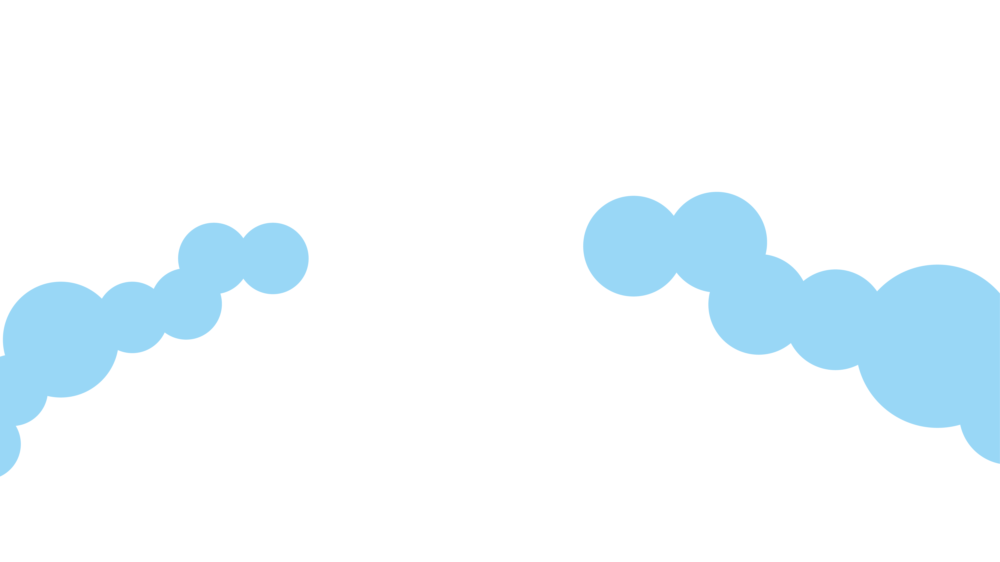

Namun, selamanya Data hanyalah sebuah mesin waktu.
Yang menjadi pengendara tetaplah manusia dan segala kebijakannya.

Namun, Data hanyalah sebuah mesin waktu.
Yang menjadi pengendara tetaplah manusia dan segala kebijakannya.
Que sera-sera, whatever will be, will be.
Sumber Data dan Daftar Pustaka:
World Economic Forum, 2023, Global Risk Report 2023.
Badan Pusat Statistik, 2023, Data Inflasi 90 Kota (Umum) 2018-2023
Bank Indonesia, 2023, Target Inflasi Bank Indonesia 2018-2023
World Bank, 2023, Inflation-Consumer Price (Annual %) 2022
Argentina Statistics Institute, 2023, Argentina Annual Inflation Rate 2022
Bank Indonesia, 2023, Indeks Harga Properti Residensial 2018-2023
Rumah.com, 2023, Indonesia Property Market Index 2018-2023
Badan Pusat Statistik, 2023, Proporsi rumah tangga dengan status kepemilikan rumah milik dan sewa/kontrak menurut Daerah Tempat Tinggal
Badan Pusat Statistik, 2023, Statistik Perumahan dan Permukiman Indonesia 2022
Kementerian Energi dan Sumber Daya Mineral, 2021, Siaran Pers Nomor: 028.Pers/04/SJI/2021
Kementerian Energi dan Sumber Daya Mineral, 2021, Siaran Pers Nomor: 246.Pers/04/SJI/2021
Energy Institute Statistical Review of World Energy (2023), Primary energy consumption is measured in terawatt-hours (TWh). of Indonesia
National Aeronautics and Space Administration (NASA), Goddard Institute for Space Studies (GISS), he combined land-surface air and sea-surface water temperature anomaly is given as the deviation from the 1951–1980 mean.
National Oceanic and Atmospheric Administration (NOAA), Global mean sea level rise is measured relative to the 1993 - 2008 average sea level.
Badan Pusat Statistik, 2021 Statistik Potensi Desa 2021
Badan Pusat Statistik, 2023, Proyeksi Penduduk Indonesia 2020-2050
Sumber Grafis:
Freepik (Freepik, Macrovector, Pch.Vector)